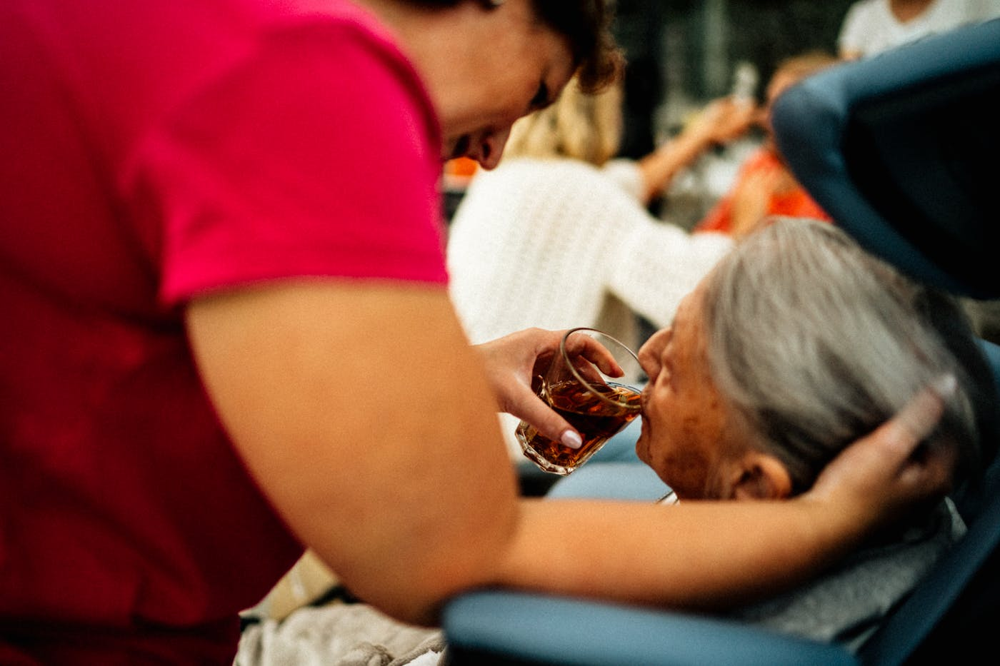
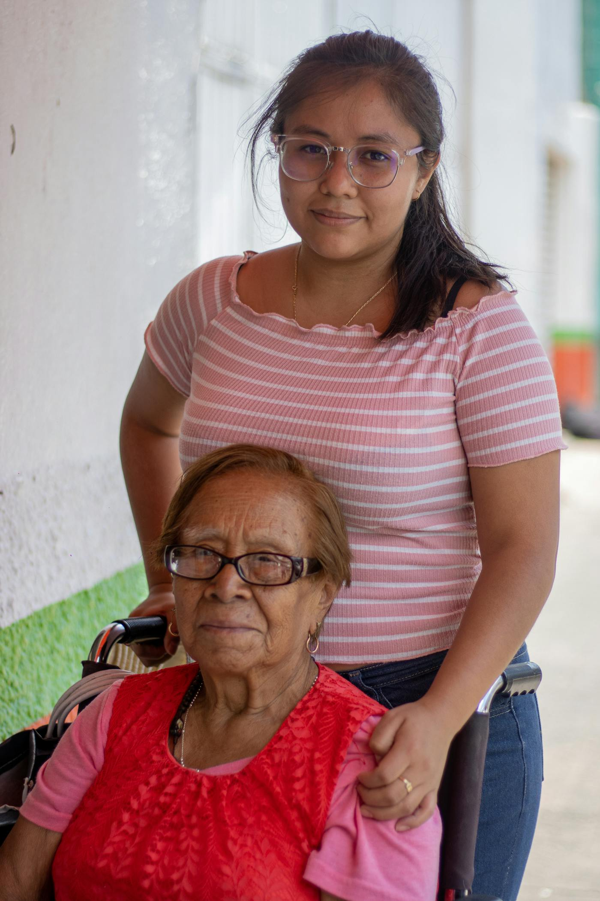
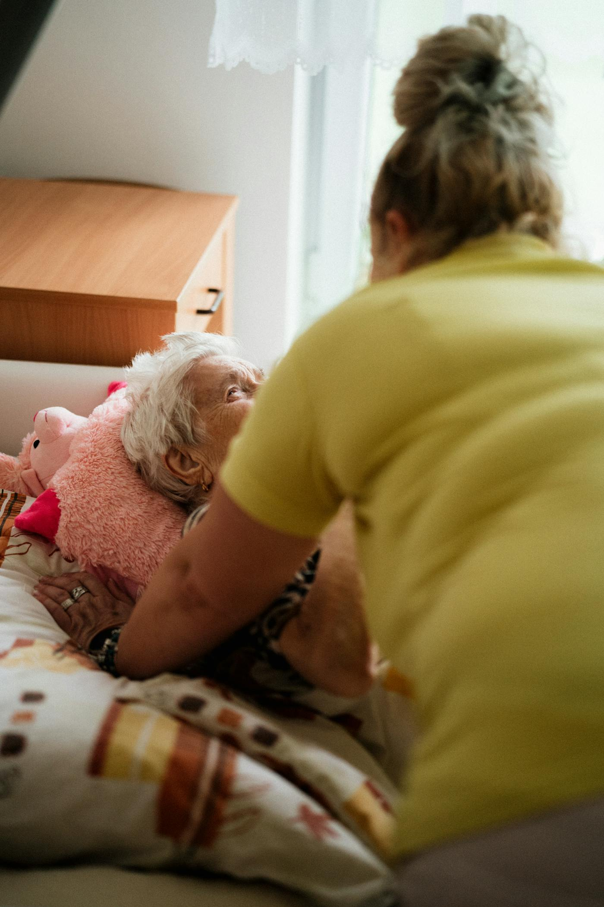
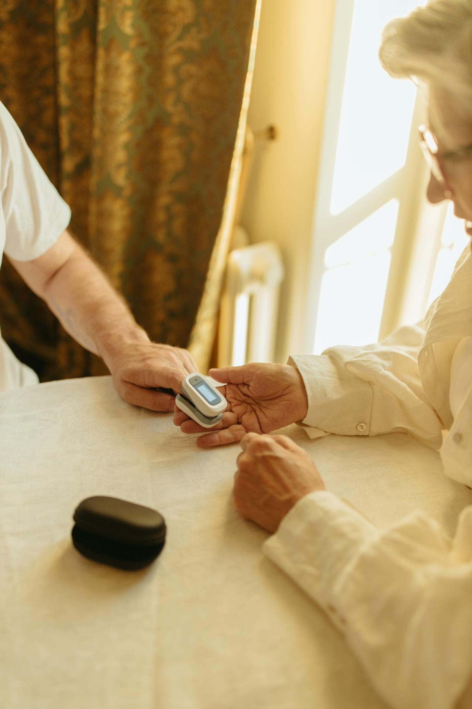

OUR STORY「働きやすさ」を、いちばん大切にしています。
ウインライフは、末期がんと闘った代表の妻を看取った経験から生まれました。 「家族との時間を守れる職場をつくりたい」——その想いが原点です。
だから私たちは、病気や家庭の事情を抱える方を積極的に採用します。 がんサバイバー、母子・父子家庭、障がいのあるお子さんの親御さん。 あなたの事情に合わせて、シフトは柔軟に組み直します。お休みも気軽にどうぞ。
＿ウインライフ合同会社 代表社員 西濱昌典
ホーム ＞ 採用情報

病気・子育て・介護・障がいのあるお子さん。どんな事情も、最初から受け止めます。
週1日〜・直行直帰OK。あなたのペースで、無理なく続けられる職場です。
ウインライフは、末期がんと闘った代表の妻を看取った経験から生まれました。 「家族との時間を守れる職場をつくりたい」——その想いが原点です。
だから私たちは、病気や家庭の事情を抱える方を積極的に採用します。 がんサバイバー、母子・父子家庭、障がいのあるお子さんの親御さん。 あなたの事情に合わせて、シフトは柔軟に組み直します。お休みも気軽にどうぞ。
※未経験の方は、最初の数回は先輩職員が一緒に訪問。「納得いくまで」同行するので安心です。
※上記は一例です。実際の勤務例（常勤フルタイムの1日など）は、取材のうえ掲載します。
※実名・顔出しのインタビューを掲載予定（取材可否は要確認）。下記は仮テキスト。



はい。未経験・ブランクの方も歓迎です。最初は先輩職員が一緒に訪問し、納得いくまで同行します。
初任者研修／ホームヘルパー2級／介護福祉士のいずれかが必要です。お持ちでない方には資格取得の補助制度があります。
週1日から相談可能です。ご都合に合わせて柔軟に調整します。
マイカー・自転車・徒歩など、ご都合の良い移動手段でOKです（AT限定可）。
はい。九産大前駅 徒歩8分の立地で、大学生の非常勤も積極採用しています。
むしろ歓迎です。事情を理解し、柔軟に対応するのが私たちの方針です。
直行直帰の移動にかかる費用について支給制度があります（金額・条件の詳細は面談時にご案内します）。
はい、一定の試用期間を設けています（期間・条件の詳細は面談時にご案内します）。
もちろんです。久しぶりの方も、先輩職員の同行から無理なく再スタートできます。
応募 → 面談（事情やご希望を伺います）→ 同行研修 → 勤務開始、という流れです。ご都合に合わせて調整します。
※「給与・交通費・試用期間」など条件面の確定値は、就業規則の内容を反映して仕上げます（西濱さん確認事項）。